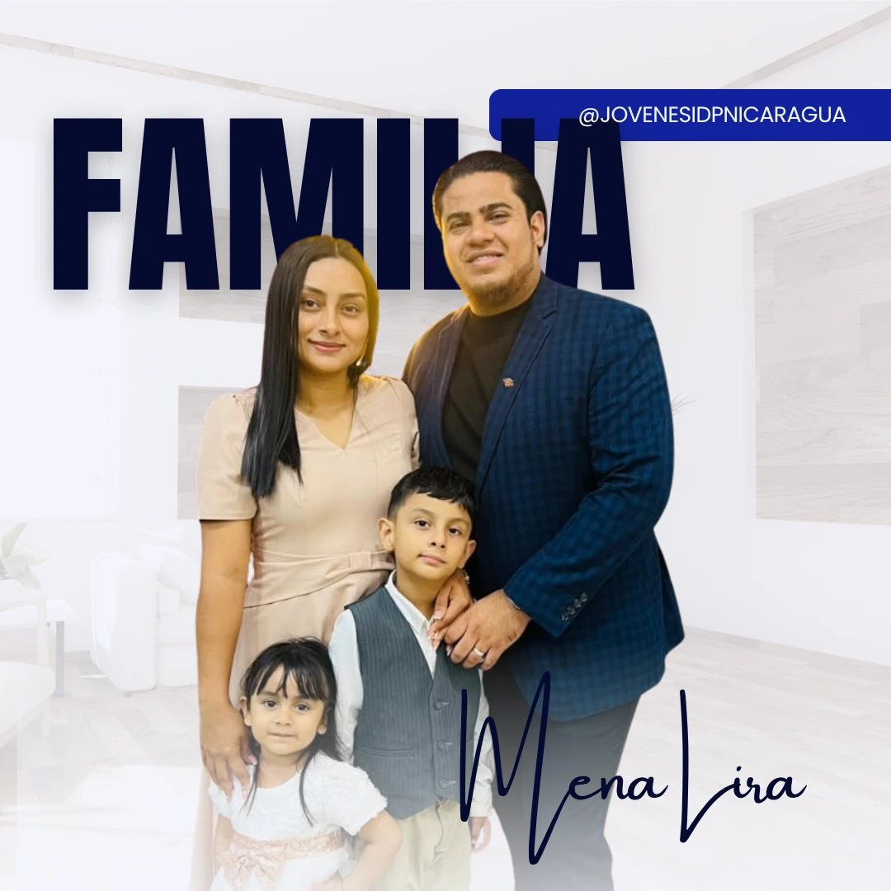

Procesos · Revista10 · 10 · 2026
El programa de la noche
Cronograma
Una noche entera para ser transformados.
Momentos centrales de la vigilia
02PROCESOS 2026
Desliza ↓
El programa de la noche
Una noche entera para ser transformados.
Momentos centrales de la vigilia
Somos una gran familia
El Ministerio de Jóvenes ha venido realizando una gran labor en todo el país. Hemos vivido:
Nuestros directores nacionales

Directores Nacionales de Jóvenes y Adolescentes
Los pastores Carlos Mena y Yosseling Lira son un matrimonio comprometido con el servicio a Dios y la extensión de su Reino. Ambos son licenciados en Banca y Finanzas y, desde el 14 de enero de 2017, han formado un hogar fundamentado en principios cristianos, junto a sus hijos Liam y Mayris.
Actualmente sirven como pastores de la Iglesia de Dios de la Profecía en Villa Sacuanjoche, Masaya, Nicaragua, ministerio que asumieron el 14 de enero de 2023. El pastor Carlos continúa su formación teológica en el New Orleans Baptist Theological Seminary y en SETEMIN, mientras desarrolla diversas responsabilidades ministeriales a nivel nacional.
El 4 de diciembre de 2025, durante la 46.ª Convención Nacional de la Iglesia de Dios de la Profecía en Nicaragua, fueron nombrados Directores Nacionales de Jóvenes y Adolescentes.
Levantar una generación que marque la diferencia.
Desde esta responsabilidad, trabajan con la visión de reconciliar a los jóvenes con Cristo mediante el poder del Espíritu Santo, levantando una generación que marque la diferencia, viva llena del Espíritu Santo y testifique que Jesús salva, santifica, bautiza en el Espíritu Santo, sana y viene pronto como Rey. Su anhelo es formar jóvenes comprometidos con la Palabra, firmes en la fe y dispuestos a cumplir la misión de Dios.
«No os conforméis a este siglo, sino transformaos por medio de la renovación de vuestro entendimiento, para que comprobéis cuál sea la buena voluntad de Dios, agradable y perfecta.»
Romanos 12:2 · RVR1960Esta revista se lee como una revista de verdad: pon tu teléfono en horizontal para ver las dos hojas.
En iPhone, para quitar la barra de arriba: toca el ícono «aA» de la barra de direcciones y elige «Ocultar barra de herramientas».